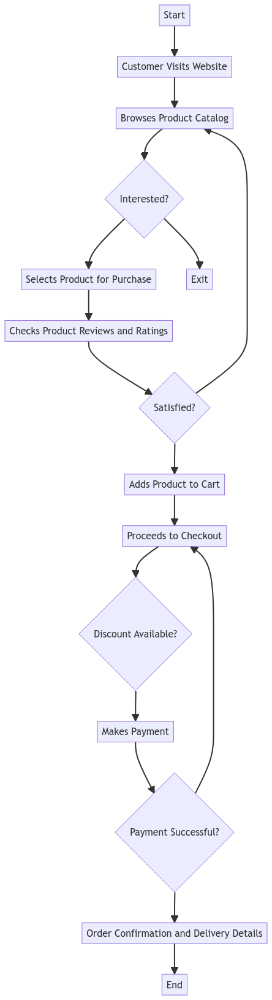

Process Model and Analysis for Canopy Growth Corporation
By Alex Popoff, For Academic Purposes (Data Was Created for this Assignment)
By Alex Popoff, For Academic Purposes (Data Was Created for this Assignment)
Canopy Growth Corporation is a leading cannabis company that manufactures a wide range of products, including cannabis edibles. The current process flow for manufacturing cannabis edibles at Canopy Growth Corporation is outlined below:

View this diagram in a new tab: https://showme.redstarplugin.com/d/d:NUruLnSc

To address the shortcomings identified in the current process model, a new business prototype is proposed. This prototype aims to revolutionize the manufacturing of cannabis edibles at Canopy Growth Corporation by implementing automation, optimizing resource allocation, and expanding storage capacity.
View this diagram in a new tab: (https://showme.redstarplugin.com/d/d:L3mSXrpq)
| Item | Current Cost ($) | Proposed Cost ($) |
|---|---|---|
| Raw Material | 100,000 | 90,000 |
| Quality Check | 20,000 | 18,000 |
| Production | 150,000 | 130,000 |
| Packaging | 30,000 | 28,000 |
| Distribution | 50,000 | 45,000 |

The implementation of automation and AI tools in the proposed business model offers significant cost savings and operational benefits. Below are some key points:
Please find below the event simulation flowchart for Canopy Growth:
 To enhance the understanding of the proposed business process, an event simulation flowchart has been designed. This flowchart represents the logic of key events in the cannabis edibles manufacturing process. The flowchart consists of various entities, each representing a critical step in the process (Canopy Growth Corporation, n.d.). The event simulation flowchart for Canopy Growth Corporation's cannabis edibles manufacturing process is designed to provide a visual representation of the entire production cycle. Starting from the procurement of raw materials to the final packaging and distribution, each entity in the flowchart represents a distinct phase (Canopy Growth Corporation, n.d.). The flowchart also highlights the decision-making points, quality checks, and potential bottlenecks in the process. By understanding the flow of events, stakeholders can identify areas of improvement and optimize the production for efficiency and qualityOur sales strategy for the new business process is as follows:
The new business process for Canopy Growth Corporation entails significant changes, including automated quality checks, AI-driven production planning, and expanded storage capacity. These improvements are expected to impact the company's sales strategy positively. To assess the feasibility of the proposed concepts and determine the probability of success, a sales analysis was performed. Analytical algorithms were employed to evaluate potential sales scenarios and outcomes. The Power BI tool was utilized to create visualizations for better comprehension. The analysis considered various factors, including market demand, pricing strategies, and competition. By integrating historical sales data and projected growth, we can estimate the potential revenue increase resulting from the new business process.Perform a sales analysis using the chosen analytical algorithms. Discuss the feasibility of your proposed concepts and provide the probability of success.


Below is the causal loop diagram for the supply-demand model with DOMESTIC sales:
 The causal loop diagram for DOMESTIC sales provides insights into the interdependencies between various factors influencing the supply and demand of Canopy Growth Corporation's cannabis edibles in the domestic market (Sterman, 2000). For instance, an increase in production capacity might lead to a decrease in product price, which in turn could boost consumer demand. Conversely, a surge in consumer preferences for a particular product variant might necessitate adjustments in production schedules (Leafly, 2023). The reinforcing loops indicate factors that amplify changes, while the balancing loops show factors that counteract or stabilize changes. Understanding these dynamics helps in making informed decisions related to production, pricing, and marketing strategies (Cannabis Business Times, 2023).
The causal loop diagram for DOMESTIC sales provides insights into the interdependencies between various factors influencing the supply and demand of Canopy Growth Corporation's cannabis edibles in the domestic market (Sterman, 2000). For instance, an increase in production capacity might lead to a decrease in product price, which in turn could boost consumer demand. Conversely, a surge in consumer preferences for a particular product variant might necessitate adjustments in production schedules (Leafly, 2023). The reinforcing loops indicate factors that amplify changes, while the balancing loops show factors that counteract or stabilize changes. Understanding these dynamics helps in making informed decisions related to production, pricing, and marketing strategies (Cannabis Business Times, 2023).
Below is the stock and flow model for the supply-demand model with FOREIGN sales:
 In the context of FOREIGN sales, the stock and flow model considers multiple variables that influence the supply and demand dynamics for Canopy Growth Corporation's cannabis edibles in international markets. This model, comprising a minimum of 10 entities, provides a comprehensive understanding of how the company's products can penetrate and thrive in foreign markets.
The central logic behind this model is to examine the interactions between various factors such as export volume, market expansion strategies, and foreign consumer preferences. By visualizing these interactions, the model offers valuable insights into the company's ability to adapt its production and distribution strategies to meet the unique demands of foreign markets effectively.
In the context of FOREIGN sales, the stock and flow model considers multiple variables that influence the supply and demand dynamics for Canopy Growth Corporation's cannabis edibles in international markets. This model, comprising a minimum of 10 entities, provides a comprehensive understanding of how the company's products can penetrate and thrive in foreign markets.
The central logic behind this model is to examine the interactions between various factors such as export volume, market expansion strategies, and foreign consumer preferences. By visualizing these interactions, the model offers valuable insights into the company's ability to adapt its production and distribution strategies to meet the unique demands of foreign markets effectively.
Below is the stock and flow model for the supply-demand model with FOREIGN sales:
In the context of FOREIGN sales, the stock and flow model considers multiple variables that influence the supply and demand dynamics for Canopy Growth Corporation's cannabis edibles in international markets. This model, comprising a minimum of 10 entities, provides a comprehensive understanding of how the company's products can penetrate and thrive in foreign markets.
The central logic behind this model is to examine the interactions between various factors such as export volume, market expansion strategies, and foreign consumer preferences. By visualizing these interactions, the model offers valuable insights into the company's ability to adapt its production and distribution strategies to meet the unique demands of foreign markets effectively. Additionally, the model emphasizes the importance of understanding the regulatory landscape in foreign countries, as this can significantly impact the company's ability to export and sell its products. It also highlights the role of cultural differences in shaping consumer preferences and the need for the company to tailor its marketing strategies accordingly.
Furthermore, as international markets present a diverse range of challenges and opportunities, the stock and flow model underscores the importance of continuous market research and feedback mechanisms. This ensures that the company remains agile and responsive to changing market conditions, thereby maximizing its potential for success in foreign markets.